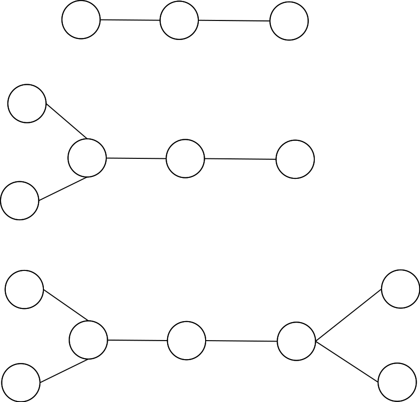
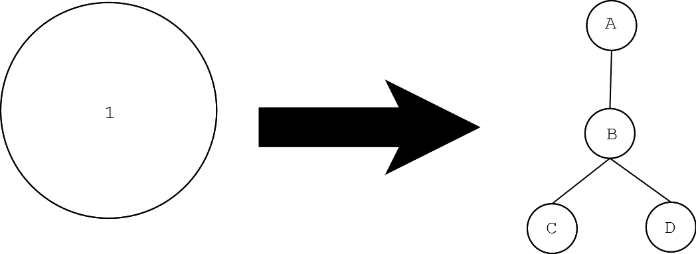

自从省选完之后状态一直不佳，感觉自己刚燃起的希望又熄灭了。所以就打算来整理一下省选之前因为懒而没整的一些题。然后你会发现前两句话一点关系都没有XD
这里是总链接$Link$.
$A$

题意：求$\sum_{i=1}^{k} a_i\times b^{k-i}$的奇偶性， $k = \Theta(n \log n)$
……其实很容易想麻烦，比如说逐个判断，整体判断啥的。但其实只要对结果都$\bmod ~10$，然后判断奇偶性就好了。
1 | cin >> b >> k ; |
其实就是在水字数
$B$

题意： 给定一条网格纸，$n, m, k$,分别表示点数，总长度，胶带的数量。对于输入的$n$个点，保证位置递增， 求覆盖所有的点所需的最小胶带长度（胶带数量$\leq k$）。
其实是个制杖题。我们考虑如果$k$是无限大，那么最优的方式一定是单点覆盖。所以如果胶带不够的话，就是要去额外多粘$N-k$个空白的区间。所以我们就可以排个序，求出$N-k$个空白区间的长度，再加上单点的长度和$n$，得到答案。注意空白区间的两头开的。
1 | cin >> N >> M >> K ; |
emmm怎么说呢，是个显然又不显然的贪心，大概还是跟OI素养直接挂钩的吧（sigh
$C$

题目简述 : 定义函数$f(a)$
$$
f(a) = \max_{0 < b < a}{\gcd(a \oplus b, a > \& > b)}
$$
给出 $q$ 个询问，每个询问为一个整数$a_i$。你需要对于每个询问，求出$f(a_i)$的值。$q=O(10^3),a=O(2^{25}).$
也算是比较巧妙的一道题，当然这个难度评级是给的分块打表的，毕竟思维难度摆在那里……首先我们考虑这个式子的结构，最大化一个gcd，那么我们不妨考虑如果$gcd(x,y)$,存在$x=0$或者$y=0$时，$gcd(x,y)=y$或者$gcd(x,y)=x$。
所以我们考虑，对于任意的$a$，我们只需要去尝试构造一种方案 ，使得$a\oplus b$最大并且$a~\& ~b$最小。那么不妨考虑直接选一个与$a$所有位上都相反的数$b$，就可以保证$a~\oplus~b$最大且$a~\&~b=0$，最后的答案就是$2^{k-1}-1$，其中$k$是二进制下$a$的位数。其中合法性是不言而喻的，因为根据构造，$b$的第$k$位（二进制位下最大的那一位）上必定是$0$，所以似乎就做完了？
然而并不是，因为$b\not =0$，所以当$~a=2^{w}-1，w\in \mathbb N~$时就会不合法。此处又有一个精妙的构造，我们发现当$a$的二进制位上都是$1$时，$\forall b<a,\exists a ~\& ~b=b, a~\oplus~b=a-b$, 于是最后就相当于求$\max \gcd (a-b,b)$，运用辗转相除或者更相减损的思想可以立即看出是$\max \gcd(a,b)$，于是只需要找出$a$最大的因子就好了——此处暴力即可。
于是最后的代码：
1 |
|
不得不说是一道比较神的的题了，Brainstorm，Brainstorm…..
$D$

题目详述：你在玩一个叫做 Jongmah 的游戏，你手上有 $n$ 个麻将，每个麻将上有一个在 $1$ 到 $m$ 范围内的整数 $a_i$。为了赢得游戏，你需要将这些麻将排列成一些三元组，每个三元组中的元素是相同的或者连续的。你只能使用手中的麻将，并且每个麻将只能使用一次。请求出你最多可以形成多少个三元组。
这道题准确预报了今年各省省选里面的毒瘤雀魂题
一道动态规划，感觉思路清新、解法自然，给出题人点赞. 然后底下是我丢到Luogu的题解：
$dp.$
其实主要思想都差不多，但我发这篇$sol$为了阐明一种观点：复杂度同阶的$DP$，不同的状态设计，会导致代码难度、时空复杂度等截然不同。
我们定义状态$dp_{i,j_{1},j_{2}}$表示考虑了前$i$大序号的麻将($mahJong$)，其中有$j_{1}$个$[i - 1, i, i + 1]$类型、有$j_{2}$个$[i, i + 1, i + 2]$类型的组合，最多组成多少个三元组。
这样定义状态的原因是：我们发现如果单纯用$1$维状态转移，那么状态势必是“前$i$大序号的麻将包含的三元组个数”，但是此状态不明确——无法准确定义“包含”的意思。而此处我们定义包含指三元组右端点也$\leq i$，那么$[i - 1, i, i + 1]$和$[i, i + 1, i + 2]$便需要单独定义出来。
转移的时候直接枚举有多少个$[i + 1,i+2, i+3]$即可（因为我们使用$i$更新$i+1$而不是用$i-1$更新$i$，如是做细节少、思考难度小）
然后转移的时候也要顺便计算$[i,i,i]$的数量。而由于如果存在三个$[i,i+1,i+2]$，那么我们直接拆成三个$[i,i,i]$，三个$[i+1,i+1,i+1]$, 三个$[i+2,i+2,i+2]$即可。
1 | cin >> N >> M ; |
$E$

题目简述：给定数列$c$和$t$，每次操作都可以选择一个$1<i<n$，令$c_i$变成$c_i’$，其中$c_i’=c_{i+1}+c_{i-1}-c_i$。问是否可以经过若干次操作，使得$\forall c_i=t_i$.
……我管这种题叫做“疯狂暗示题”，其实也是一种做题技巧的问题。打完比赛反思了一下，似乎有好几个关键信息没有捕捉到。比如说“若干次操作”，没有限定操作次数，就说明无论怎么操作，其背后一定有某些本质不变的东西，否则应该出成一个交互题，在$k$步之内完成任务的那种感觉。而同时，每次操作一个$c_i$，都只会跟$c_{i-1}$、$c_{i+1}$有关。所以，一切的一切都在引导我们向差分靠拢。
我们思考对于一个$c_i$，令其满足$c_{i-1}+d_1=c_i, ~c_i+d_2=c_{i+1}$，那么我们新的$c_i’$就是
$$
c_i’=c_i-d_1+c_i+d_2-c_i=c_i-d_1+d_2
$$
那么我们就会发现
$$
c_{i+1}-c_i’ = d_1\\ c_i’-c_{i-1} = d_2
$$
换句话说，其实就是相邻两个差换了位置！那么也就是说无论怎样，差分数组里面每个数出现的次数都是不变的，直接排个序检查就好。
1 | cin >> N ; |
感觉其实$C/D/E$都是比较好的思维题……但是接下来一个就不是了。
$F$

题目简述 ：给定一棵以$1$为根的$n$个节点有根树， 给定$m$次询问， 形如 v l r， 输出以$v$为起点，终点编号为$l$ ~$r$以内的叶子中最短的路径距离。
根据dfs序的相关知识，我们需要一棵线段树来维护dfs序上的路径长度最小值。但是很多人（比如我）会认为一定需要线段树上个树什么的，但其实有更简单的策略。
不妨直接令当前点到其他所有的点的距离是一个数组$dis$。思考如果我们把当前点的当前子节点设为$x$, 那么我们如果向下递归$x$，就会有$x$到$x$子树内的所有节点的$dis$，比其父亲的dis都小一个$E[k].v$，$x$到其他节点的距离都会大一个$E[k].v$，那么就如同状态转移一样，每次向下递归的时候先统计一遍$Ans$，再更新一下距离即可。
其实这个题是一个$tricky$题，比如我们为了用一个dis数组表示到叶子的距离，可以把非叶子之间的距离都设成$\rm{Inf}$ ；比如我们为了飞速统计答案，可以把询问离线下到一个vector里面，在dfs的时候直接统计出全部答案。
不失为一道好题啊qwq
1 |
|
by_pks其实是用来占位的因为我喜欢同一个代码块里，每一行的长度都是递增的XD
$G$

题目大意：给出一棵N个点的树，初始时某些节点是白色，其他节点没有颜色，有两个人在树上博弈。每一回合，一方可以将一个没有颜色的点染成白色，然后另一方可以将一个没有颜色的点染成黑色。如果在某次染色后树上存在三个点ABC满足有边$(A,B)(B,C)$且ABC都有颜色且颜色相同，则该颜色对应的人获胜。假设两人绝顶聪明，问最后结果如何。$T\leq 5e5,\sum n\leq 5e5$
emmmm一道我不会的题。其实总觉得这种博弈论有一种一脉相承的精妙之处，但是自己总是不能稔熟于心……GG
然后我选择搬了Itst巨佬的思路过来
0x01
首先我们考虑，黑色是不可能获胜的，毕竟原来就已经有一堆白点了……
其次我们考虑先忽略原树中的所有已经被染过色的点，然后用一种比较前卫的方式来分类讨论——度数讨论法。
- 假设有一个点的度数$\geq 4$，换句话说这个联通块的点的个数要$\geq 5$，那么根据白色先手的原则，白色的一定可以取$3$个节点，并且一定可以取$3$个连续的节点。所以白色赢；
- 如果存在一个点的度数$=3$，且它所连的$3$个点至少有$2$个点不是叶子节点，那么我们如果考虑讲树平展开之后，先选中间的点，就可以保证白色赢；
- 其余的情况我们可以考虑大力分类讨论树的形态：
我们发现，对于前两种情况都是draw的。而对于第三种情况，如果总点数是奇数个，那么白色必赢。我们考虑从左向右染色，白色第一次考虑染从左往右第二个非叶子节点，那么黑色只能染第一个；白色染第四个，黑色只能染第三个……以此类推。到最后一定会出现白色染了$2n$这个点，黑色去染$2n-1$这个点，那么白色接下来就可以染$2n+1$这个点，Winner！
0x02
接下来我们如果要算上原本就是白色的点呢？对于这种情况，一般都是转化回我们已经讨论完的0x01去。我们考虑把一个白色点拆成$4$个无色点。
其中A就是原来的$1$号点，原图上哪些点跟$1$连了边，现在也和$A$连，换句话说就是$A$多了一棵三个节点的子树。那么接下来我们考虑其可行性。
- 如果$A$被染成黑色，那么白色没有必要再染子树内的点，这种情况等价于不连子树。
- 如果$A$被染成白色，那么黑色一定要染$B$点，那么此时这棵子树又没用了，所以也等价于不连子树。
嗯，然后这个题就完了。我们可以发现就是一个大力分类讨论的过程——题还是挺好的。
1 |
|
总结
Global Round的题目质量不低蛤。